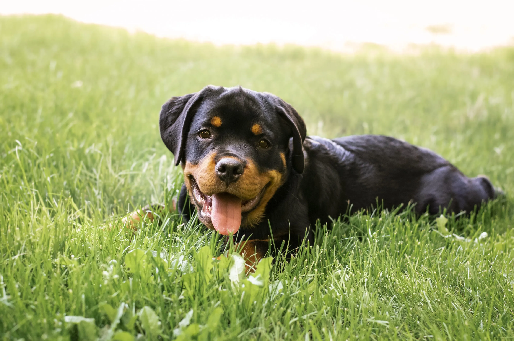

Él es Thor, un rottweiler noble, fuerte y con un corazón más grande que su tamaño. A pesar de su apariencia imponente, Thor es un perro sensible, cariñoso y muy fiel. Su historia, sin embargo, no ha sido fácil. Vivió mucho tiempo atado en un patio, sin apenas contacto con personas, con frío en invierno y calor en verano. Solo, invisible. Como si su vida no importara. Un día, sus antiguos dueños se marcharon… y no volvieron. Thor se quedó allí, esperando durante días sin entender qué había pasado. Vecinos alertaron de su situación, y así fue como llegó a nuestro albergue: desnutrido, con miedo, pero aún con esa chispa de bondad que nunca perdió. Al principio le costó confiar. Miraba desde lejos, sin acercarse. Pero con tiempo y cariño, nos mostró su verdadera esencia: un perro leal, tranquilo, protector y con un amor inmenso por las personas que le tratan bien. Es especialmente cariñoso con los niños y muy obediente. Aprende rápido, disfruta de los paseos, y es feliz simplemente con una pelota y una caricia. Thor es un perro que necesita un hogar donde lo respeten, lo comprendan y le den el amor que tanto le faltó. No es agresivo ni dominante, solo necesita seguridad y una familia que entienda que detrás de su porte fuerte hay un alma buena que solo quiere paz y compañía. Adoptar a Thor es darle una nueva oportunidad a un perro noble que ha sufrido el abandono, pero que aún cree en el amor. Él ya está preparado para empezar de nuevo. ¿Estás tú preparado para abrirle las puertas de tu hogar?
